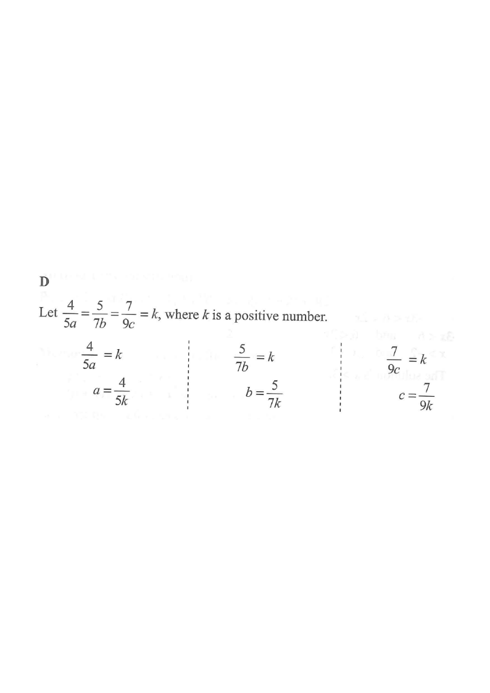

Scroll the solution → the figure updates step by step.
$a$ (blue bar)$b$ (red bar)$c$ (green bar)common value $k$final comparison
HKDSE 2014 · Paper 2 · Q12 · Rate, Ratio and Variations
It is given that
$\dfrac{4}{5a}=\dfrac{5}{7b}=\dfrac{7}{9c}$,
where $a$, $b$ and $c$ are positive numbers.
Which of the following is true?
A. $a<b<c$
B. $a<c<b$
C. $b<a<c$
D. $b<c<a$

Figure (original exam diagram)
Step-by-step Solution
Step 1Introduce a common ratio $k$.
Equal Ratios (Common Constant)\(\dfrac{a}{b}=\dfrac{c}{d}=\dfrac{e}{f}=k\)All three fractions equal \(k>0\), so each of \(a,b,c\) can be written in terms of the single number \(k\).
Since all three fractions are equal and $a,b,c>0$, their common value is a positive number. Let
$$\frac{4}{5a}=\frac{5}{7b}=\frac{7}{9c}=k,\qquad k>0.$$
One unknown $k$ replaces three linked unknowns — a standard "equal-ratio" trick.
Step 2Solve each equation for $a$, $b$ and $c$.
Cross-Multiplication\(\dfrac{a}{b}=k\ \Rightarrow\ a=bk\)\(\dfrac{4}{5a}=k\) gives \(a=\dfrac{4}{5k}\), and similarly \(b=\dfrac{5}{7k}\), \(c=\dfrac{7}{9k}\).
Each letter is now written in terms of the same positive quantity $k$.
Step 3Compare the three coefficients.
Comparing Fractions with a Common Denominator\(\dfrac{p}{D}<\dfrac{q}{D}<\dfrac{r}{D}\iff p0)\)Over the common denominator \(315k>0\), the numerators \(225\), \(245\), \(252\) settle the order of \(b\), \(c\), \(a\).
Put everything over a common denominator $315$:
$$a=\frac{4}{5k}=\frac{252}{315k},\qquad
b=\frac{5}{7k}=\frac{225}{315k},\qquad
c=\frac{7}{9k}=\frac{245}{315k}.$$
Since $315k>0$, the order of $a,b,c$ is the order of the numerators $252,\;225,\;245$.
Be careful! $b$ has the smallest numerator even though its fraction looked "bigger".
Step 4Arrange in ascending order.
$$225 < 245 < 252 \quad\Longrightarrow\quad b < c < a.$$
Equivalently: $\dfrac{5}{7}<\dfrac{7}{9}<\dfrac{4}{5}$, so the matching letters follow the same order.
Step 5Match with the options.
The result $b<c<a$ is exactly option D.
Quick check: take $k=1$, then $a=0.8$, $b\approx0.714$, $c\approx0.778$ — indeed $b<c<a$.
Answer:$\;b<c<a\;$ → D
PRACTICESimilar question — try it yourself
Question. It is given that \(\dfrac{3}{4a}=\dfrac{4}{5b}=\dfrac{5}{6c}\), where \(a\), \(b\) and \(c\) are positive numbers. Which of the following is true? A. \(a
Show the worked solution
Step 1. Let \(\dfrac{3}{4a}=\dfrac{4}{5b}=\dfrac{5}{6c}=k>0\).
Step 2. Then \(a=\dfrac{3}{4k}\), \(b=\dfrac{4}{5k}\), \(c=\dfrac{5}{6k}\).
Step 3. Compare the coefficients over the common denominator \(60\): \(\dfrac{3}{4}=\dfrac{45}{60}\), \(\dfrac{4}{5}=\dfrac{48}{60}\), \(\dfrac{5}{6}=\dfrac{50}{60}\).
Step 4. Since \(45<48<50\) and \(60k>0\), we get \(a